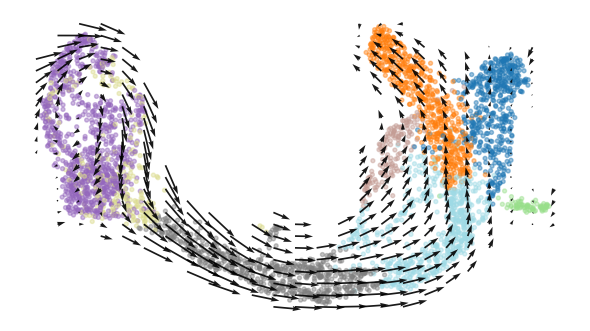
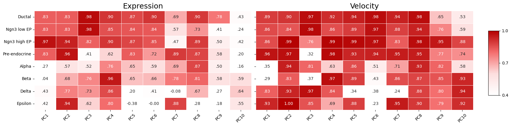
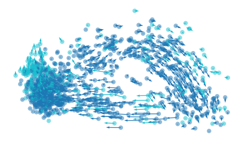
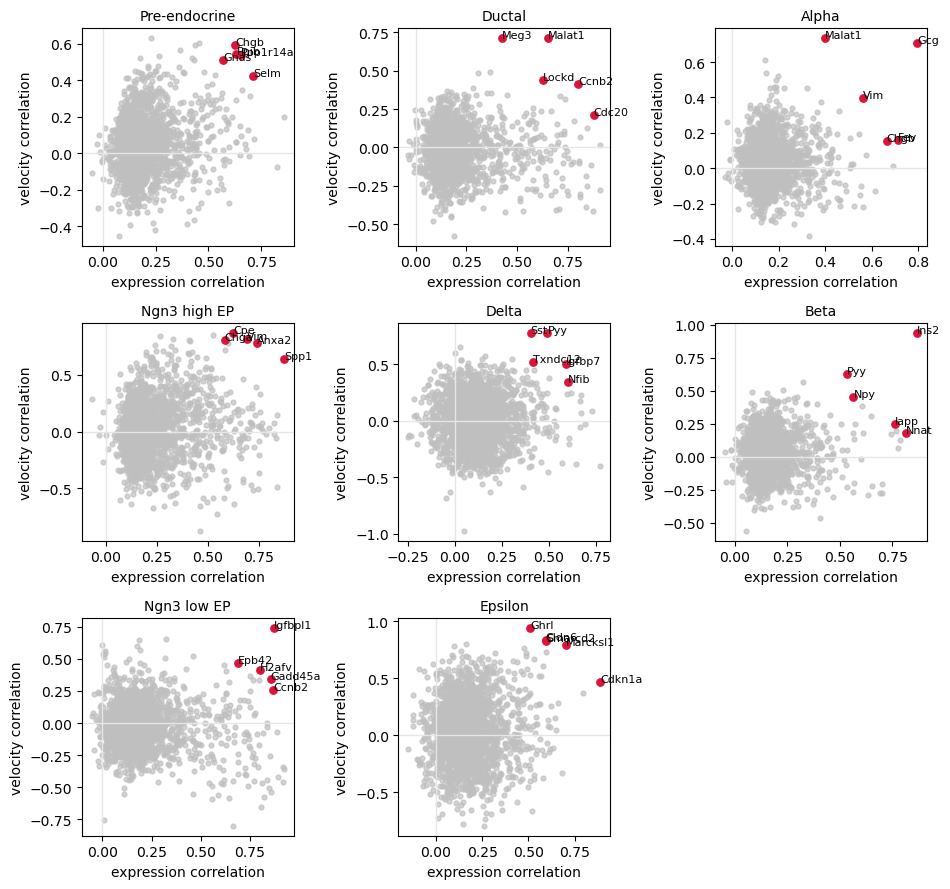

How to Evaluate the Consistency of the Velocity Embedding¶
Tutorials
FlowMap embedding · Velocity embedding consistency
This tutorial uses the scVelo pancreas AnnData file. Download it manually from Figshare to keep the same cells and genes across runs:
https://figshare.com/articles/dataset/scvelo-pancreas_h5ad/16547649?file=30595479
Place the file at data/scvelo-pancreas.h5ad, or change DATA_PATH below.
Load Data¶
from pathlib import Path
import numpy as np
import pandas as pd
import scanpy as sc
import scvelo as scv
from scipy import sparse
from sklearn.decomposition import PCA
from sklearn.preprocessing import StandardScaler
DATA_PATH = Path("data/scvelo-pancreas.h5ad")
adata = sc.read_h5ad(DATA_PATH)
Recompute PCA¶
When the input dimension is high, such as thousands of genes, it is recommended to perform the embedding-level FlowMap fit in PC space.
def to_dense(x):
return x.toarray() if sparse.issparse(x) else np.asarray(x)
hvg_mask = adata.var["highly_variable"].to_numpy(dtype=bool)
X_scaled = StandardScaler().fit_transform(to_dense(adata[:, hvg_mask].X))
pca = PCA(n_components=50, svd_solver="arpack", random_state=0)
adata.obsm["X_pca"] = pca.fit_transform(X_scaled)
pcs = np.zeros((adata.n_vars, 50))
pcs[hvg_mask] = pca.components_.T
adata.varm["PCs"] = pcs
adata.uns["pca"] = {
"variance": pca.explained_variance_,
"variance_ratio": pca.explained_variance_ratio_,
}
scv.tl.velocity(adata, vkey="stochastic_velocity", mode="stochastic")
scv.tl.velocity_graph(adata, vkey="stochastic_velocity")
scv.tl.velocity_embedding(adata, basis="pca", vkey="stochastic_velocity")
Fit FlowMap Spline¶
FlowMap can work with existing embeddings. Passing X_emb keeps the given
UMAP coordinates and fits the spline maps directly on that embedding.
from flowmap import VectorFieldEmbedder
X_pca = np.asarray(adata.obsm["X_pca"])
V_pca = np.asarray(adata.obsm["stochastic_velocity_pca"])
X_emb = np.asarray(adata.obsm["X_umap"])
emb = VectorFieldEmbedder(
X_pca,
V_pca,
X_emb=X_emb,
use_PCA=False,
method="umap",
dist_method="euclidean",
)
emb.fit_embedding(seed=0)
Plot Embedded Velocity¶
from flowmap.plot import plot_velocity_grid
cell_type = adata.obs["clusters"].astype(str).to_numpy()
plot_velocity_grid(
emb.X_emb,
spline_vf=emb.spline_vf,
scatter_color=cell_type,
grid_size=25,
scatter_size=8,
scatter_alpha=0.45,
arrow_scale=0.1,
arrow_width=0.003,
cmap="tab20",
)

The fitted embedded velocity field on the existing UMAP coordinates.¶
Evaluate PCs¶
from flowmap.evaluation import SplineFitEvaluator
def evaluate_pcs_by_cell_type(evaluator, labels, n_pcs=10):
pc_labels = [f"PC{i + 1}" for i in range(n_pcs)]
expr_rows, vel_rows = [], []
for label in pd.unique(labels):
idx = np.where(labels == label)[0]
result = evaluator.evaluate(cell_idx=idx)
expr_rows.append(pd.Series(result["expr_corr_gene"][:n_pcs],
index=pc_labels, name=label))
vel_rows.append(pd.Series(result["vel_corr_gene"][:n_pcs],
index=pc_labels, name=label))
return pd.DataFrame(expr_rows), pd.DataFrame(vel_rows)
pc_expr_scores, pc_vel_scores = evaluate_pcs_by_cell_type(
SplineFitEvaluator(emb, mode="default"),
cell_type,
)

PC-level expression and velocity consistency by cell type.¶
Raw PC Velocity¶
The PC-level evaluation suggests that PC3 and PC8 have higher consistency with the embedding. We can look at the raw velocity values directly in that PC space.
from flowmap.plot import plot_2d_quiver
pc_x, pc_y = 2, 7
X_pc = adata.obsm["X_pca"][:, [pc_x, pc_y]]
V_pc = adata.obsm["stochastic_velocity_pca"][:, [pc_x, pc_y]]
mask = np.isin(cell_type, ["Ductal", "Ngn3 low EP"])
plot_2d_quiver(
X_pc[mask],
V_pc[mask],
color=(cell_type[mask] == "Ngn3 low EP").astype(float),
scale=0.4,
size=40,
alpha=0.5,
cmap="tab10",
)

Raw RNA velocity projected onto PC3 and PC8.¶
Fit Gene Splines¶
By default, this tutorial fits FlowMap in PC space. For gene-level evaluation, we can either use PC-level reconstruction as an approximation or refit splines directly from the embedding to genes. Here we refit the gene-level splines.
gene_idx = np.flatnonzero(hvg_mask)
X_gene = to_dense(adata.layers["spliced"][:, gene_idx]).astype(np.float32)
V_gene = to_dense(adata.layers["stochastic_velocity"][:, gene_idx]).astype(np.float32)
gene_names = adata.var_names[gene_idx].to_numpy()
emb.fit_gene_level_splines(
X=X_gene,
V=V_gene,
dof_gene=50,
dof_vf_gene=50,
)
Gene-Level Evaluation¶
evaluator = SplineFitEvaluator(emb, mode="gene")
metrics = evaluator.evaluate()

Per-gene expression and velocity reconstruction within each cell type.¶
The runnable notebook version is available at
tutorial/pancreas_tutorial.ipynb.